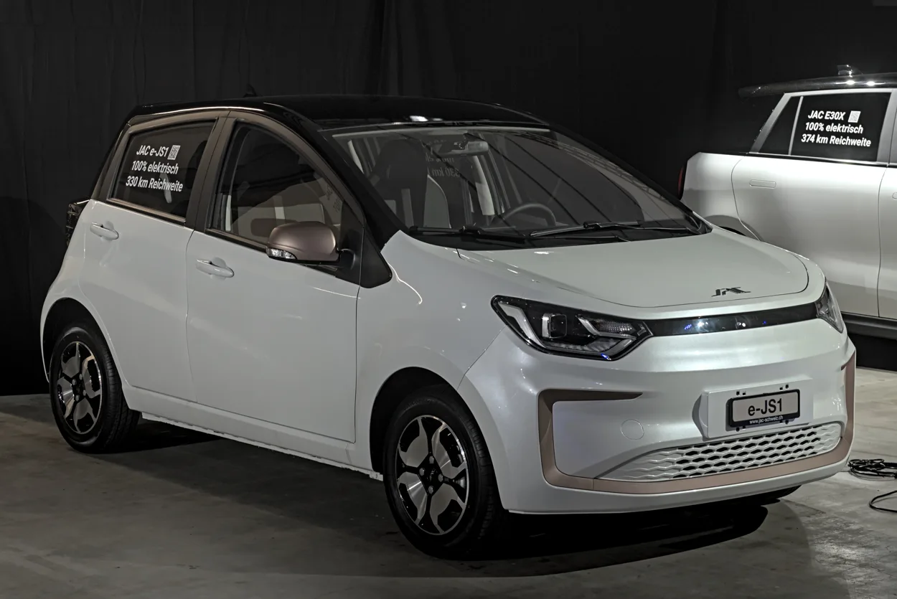

_front.jpg){kind=link}
Transformando a etiqueta em energia por mês
No PBE Veicular 2026, a linha do Fiat 500e Icon indica 0,46 MJ/km e 227 km de autonomia. A do JAC e-JS1 registra 0,50 MJ/km e 181 km. Para comparar com uma tarifa de energia, multiplicamos o consumo pela distância e dividimos por 3,6, a quantidade de megajoules em um quilowatt-hora.
| Modelo | 100 km | 1.000 km |
|---|---|---|
| Fiat 500e Icon | 12,8 kWh | 127,8 kWh |
| JAC e-JS1 | 13,9 kWh | 138,9 kWh |
Quanto pesam 11 kWh?
Com uma tarifa ilustrativa de R$ 1 por kWh, a diferença seria de aproximadamente R$ 11 por mil quilômetros ou R$ 133 em 12 mil km. Esse cálculo isola a eficiência de etiqueta. Na tomada, perdas de recarga, climatização, trajeto e cobranças por sessão podem alterar o gasto. Para fazer o seu orçamento, use os kWh cobrados pelo carregador e a tarifa do local que você frequenta.


Quando a autonomia pesa mais que a tarifa
Se o percurso entre duas recargas garantidas somar 160 km, a margem sobre a autonomia de etiqueta é de 67 km no Fiat e 21 km no JAC. Em um usado, o estado da bateria pode mudar essa folga. Peça o histórico da unidade e considere um percurso de teste próximo do seu uso antes de decidir pelo menor preço anunciado.
Tabela do Inmetro usada no cálculo (PDF), categoria subcompacto.